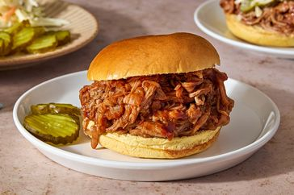

Slow Cooker Pulled Pork

This easy slow cooker pulled pork recipe uses pork tenderloin and root beer to make the most tender shredded pork. Mixed with your favorite BBQ sauce. 10 mins Prep.
Ingredients
- 1 (2-pound) pork tenderloin
- 1 (12-fluid ounce) can or bottle root beer
- 1 (18-ounce) bottle your favorite barbecue sauce
- 8 hamburger buns, split and lightly toasted
Steps
- Gather the ingredients.
- Place pork tenderloin in a slow cooker; pour root beer over top.
- Cover and cook on Low until pork shreds easily, 6 to 7 hours. Note: the actual length of time may vary according to the individual slow cooker.
- Drain well. Stir in barbecue sauce.
- Pile pulled pork onto hamburger buns.
- Serve and enjoy!
Home